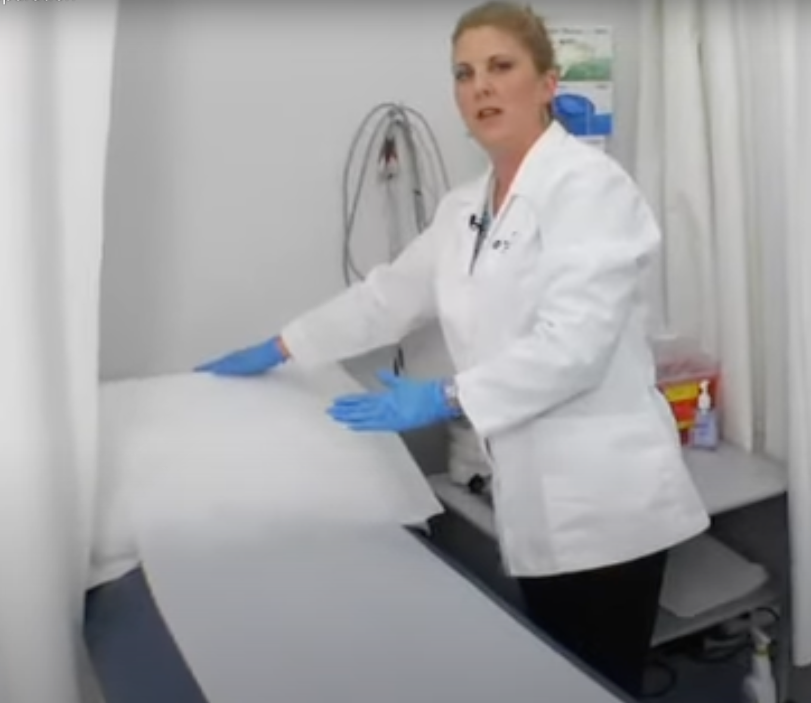

Medical Assistants' Compliance Training
Certification Quiz
Congratulations! You have completed the medical assistants' compliance training. As a final step, please answer each of the questions below to prove your knowledge. If you get a question wrong, you will receive feedback and will be prompted to try again.
1) Which of the following VIOLATES a privacy practice required under HIPAA?
-
Asking the patient to show ID.
-
Shredding the Notice of Privacy Practices form after it has been scanned into the EHR system.
-
Staying logged into the EHR system while you room a patient.
-
Speaking quietly with a patient about their protected health information at the front desk.
2) Which of the following explains why asking a patient about their medical history is a safety concern?
-
The patient is almost always calmer after talking about their medical history.
-
The information in their medical charts on the EHR systems needs to be accurate, including medications and allergies, to receive appropriate care.
-
Patients are often reluctant to tell the truth to doctors, so MAs must ask them directly.
-
The medical history may not match the vitals, indicating a serious health concern.
3) Which of the following is the correct sequence of the proper disposal and disinfection procedures for examination room tables?
-
Put on gloves, place any sharps in the sharps container, roll up paper and place in trash, use bleach solution on table, and wipe down table and dry.
-
Put on gloves, roll up paper and place in trash, use bleach solution on table, wipe down table and dry, and place any sharps in the sharps container.
-
Place any sharps in the sharps container, roll up paper and place in trash, use bleach solution on table, wipe down table and dry, and put on gloves.
-
Put on gloves, place any sharps in the sharps container, use bleach solution on table, wipe down table and dry, and roll up paper and place in trash.

By Joey Notaro, 2025